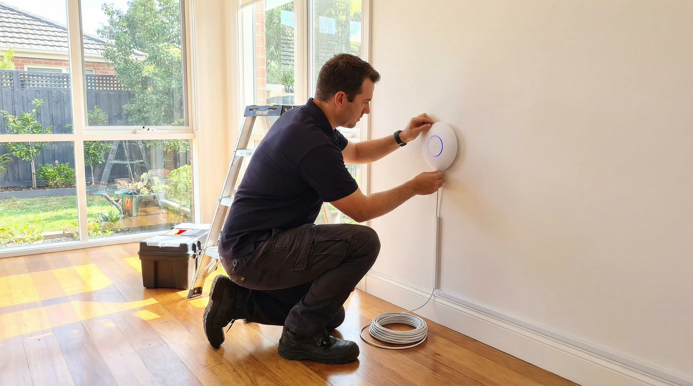
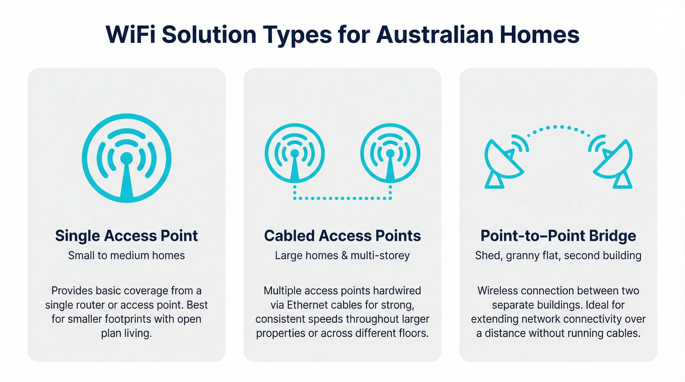
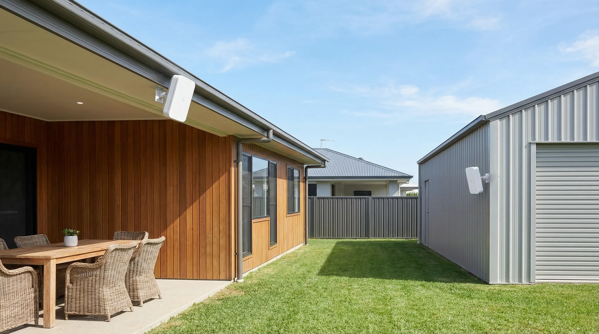

Professional WiFi installation and configuration for Gold Coast homes. Whether you need a new access point, an upgraded router or a full single-router setup using Ubiquiti UniFi, Grandstream or TP-Link — we supply, install and configure it correctly at your home. fast-turnaround service available.
bcom ICT offers expert mesh WiFi installation and home WiFi setup across the Gold Coast. We eliminate dead zones, configure mesh networks, and ensure fast, reliable internet coverage throughout your home.
Not every home needs a mesh system. For many Gold Coast homes a single high-performance access point or a well-configured dual-band router delivers faster, more reliable WiFi than a cheaper mesh setup. We assess your home and recommend the right product — not the most expensive one. This service is part of our broader networking & WiFi Gold Coast offering. If your internet is slow rather than your WiFi, see our router & modem setup Gold Coast service.
WiFi installation on the Gold Coast covers a wide range of setups. A small apartment in Surfers Paradise has very different needs to a large two-storey home in Robina or a rural acreage property in Nerang with a workshop 80 metres from the house. The right solution depends on your home’s size, layout, wall construction and what you need to connect. We look at all of that before recommending anything.
We supply and install single or multiple wireless access points — including Ubiquiti UniFi, TP-Link EAP and Grandstream — configured and optimised for your Gold Coast home layout.
New router installed, all bands configured, guest network set up and security hardened — ASUS, Netgear, TP-Link and other leading brands supplied and supported.
Slow WiFi even with a good router? We analyse interference, set the correct channels and bands, and tune your existing equipment for the best possible performance in your Gold Coast home.
We connect all your devices — computers, phones, smart TVs, printers and smart home gear — to your new Gold Coast WiFi network before we leave.
WPA3 encryption, strong passwords, guest network isolation and firmware updates — your Gold Coast home WiFi secured correctly from day one.
We make sure your new WiFi hardware works correctly with your NBN connection type — FTTP, FTTN, HFC or Fixed Wireless — tested and confirmed before we leave your Gold Coast home.
Not sure which brand or product is right for your Gold Coast home? We give independent advice — we’re not tied to any supplier and will recommend what actually suits your home size, layout and budget. Call 07 3041 8993 to discuss before you book.
When you choose bcom ICT, you are partnering with a Gold Coast local business that prioritises your needs over sales targets. We provide independent advice with no vendor commissions, ensuring the solutions we recommend are genuinely the best fit for your situation. We always provide a transparent, fixed-price quote before any work begins. With 7-day availability, we are here when you need us most.
Not every Gold Coast home needs a mesh system. We assess your layout, wall materials and usage before recommending a product — so you only buy what you actually need.
Anyone can plug in a router. We configure channels, security, guest networks, QoS settings and NBN integration so your WiFi performs at its best from day one.
Most Gold Coast call-outs within 2–4 hours. fast-turnaround WiFi installation available across all suburbs.
We don’t leave until every device in your Gold Coast home is connected and the signal is confirmed in every room you need it.
A cabled WiFi solution is exactly what it sounds like. Instead of relying on a single router to broadcast a wireless signal throughout your home, you run ethernet cables from a central switch or router to access points positioned in the areas where you need coverage. Each access point connects to the network via cable and broadcasts WiFi locally. The result is fast, stable and consistent wireless coverage that doesn’t degrade as you move further from the source.
This approach is the standard for commercial buildings, offices and schools — and it works just as well in homes. On the Gold Coast, we install cabled access point systems in homes of all sizes, from single-storey houses in Burleigh Heads to large two-storey properties in Coomera and acreage homes in Nerang. The hardware we most commonly install for these setups is Ubiquiti UniFi, and for good reason.

Ubiquiti UniFi is the access point brand we install most often. The UniFi range sits between consumer-grade hardware and full enterprise equipment. It gives you prosumer performance, a clean management interface and hardware that is built to last — without the price tag of a commercial system. For a Gold Coast home that needs reliable WiFi across multiple rooms or floors, a UniFi access point is usually the best value option available.
The most popular model for residential installs is the UniFi U6 Pro. It supports WiFi 6 (802.11ax), handles dozens of connected devices without slowing down, and covers a large area from a single unit. For smaller homes or apartments, the UniFi U6 Lite is a more compact and affordable option that still delivers WiFi 6 performance. For outdoor areas, patios or pool zones, the UniFi U6 Mesh or U6 Extender can be mounted under an eave and connected via ethernet to bring the same network outdoors.
All UniFi access points are managed through the UniFi Network application, which runs on a local controller (a Ubiquiti Cloud Gateway or a self-hosted controller on a small server). This gives you a single dashboard showing every device on your network, signal strength across each access point, and the ability to make changes without touching the hardware. We set up the controller as part of the installation and walk you through the app before we leave.
Other brands we regularly install include TP-Link EAP access points (the Omada range), which offer similar cabled access point setups at a slightly lower price point, and Grandstream access points, which are a solid choice for homes that already use Grandstream networking equipment. For straightforward home installs where budget is the priority, TP-Link Omada is a reliable option. For homes where performance and long-term expandability matter more, UniFi is the better fit.
Not every home needs multiple access points. For a lot of Gold Coast homes — particularly single-storey houses under around 200 square metres with a reasonably open floor plan — a single well-positioned access point is all you need. The key is choosing the right hardware and placing it correctly.
A Ubiquiti UniFi U6 Pro mounted centrally in a home, connected via ethernet to the NBN modem, will cover most of that home with strong, fast WiFi. The same is true of a TP-Link EAP670 or a Grandstream GWN7660. These are not consumer routers with built-in WiFi. They are dedicated wireless access points designed to do one thing well — broadcast a strong, stable signal across a defined area.
The problem with most consumer router setups is placement. The NBN connection point is often in a hallway, a garage or a corner room — not in the middle of the house. A consumer router placed at the NBN box will give you excellent signal in that room and poor signal at the other end of the house. A cabled access point install solves this by running a cable from the NBN modem to the best location in the house and mounting the access point there. The router handles the internet connection; the access point handles the WiFi.
We see this scenario regularly in homes across Palm Beach, Varsity Lakes and Coolangatta. The homeowner has a perfectly good NBN connection but poor WiFi in the bedrooms or at the back of the house. In most cases, a single cabled access point mounted in the right location fixes the problem without any additional hardware.
A Southport homeowner had just bought a mid-range router from a big box retailer and still couldn’t get a usable signal on the second floor or in the back of the house. The router was sitting in the wrong location and was configured on the wrong channel for their street.
Relocated, reconfigured and channel-optimised. Full signal throughout the home without buying additional hardware.
A Robina family was paying for a 100Mbps NBN plan but getting less than 20Mbps on their devices. Their ISP-supplied modem was using outdated WiFi settings and the router was placed inside a kitchen cabinet next to the microwave.
TP-Link access point installed and configured. Speeds consistently above 90Mbps across all rooms.
A Burleigh Heads resident had been through two different mesh systems and found both unreliable for working from home. They wanted something more robust but didn’t know where to start with Ubiquiti UniFi or what equipment they actually needed.
Single Ubiquiti UniFi U6 Pro access point installed and configured. Stable, fast and managed from a single app.
Mesh WiFi systems are marketed as the solution for large homes, and they work well in some situations. But they have real limitations that become apparent in larger or more complex Gold Coast properties.
A mesh system works by having multiple nodes communicate wirelessly with each other. Each node receives the signal from the previous one and rebroadcasts it. The problem is that every time the signal is rebroadcast wirelessly, it loses speed and introduces latency. In a two-node mesh system, the backhaul between the nodes can consume a significant portion of the available bandwidth. In a three-node system, the degradation is worse again. If the nodes are separated by thick walls, steel-framed construction or long distances, the backhaul signal weakens further and performance drops noticeably.
Many Gold Coast homes — particularly the larger two-storey houses in Helensvale, Coomera and the northern suburbs — have construction that makes mesh unreliable. Concrete block walls, steel framing, double-brick construction and homes with multiple wings or outbuildings all reduce the effectiveness of a wireless mesh backhaul. In these homes, a cabled access point system is a much better solution.
With a cabled setup, each access point connects directly to the router via ethernet. There is no wireless backhaul, no signal degradation between nodes and no latency introduced by the mesh network. Every access point delivers the same speed as a direct connection. A device connected to an access point at the far end of the house gets the same performance as a device sitting next to the router.
We connect to existing house cabling where it is available. Many Gold Coast homes built in the last 15 years have ethernet cabling already run through the walls — often installed during construction but never used, or used for a previous phone or pay TV system. We test the existing cable runs, confirm they are suitable for modern network use, and connect the access points directly to them. This avoids the need to run new cables and keeps the install clean and tidy.
Where existing cabling is not available or is not in the right location, we run new ethernet cable. We use Cat6 cable as standard, which supports Gigabit speeds and is future-proof for WiFi 6 and WiFi 7 hardware. Cables are run through roof spaces, wall cavities or along skirting boards depending on the home’s construction and the homeowner’s preference. We aim for a clean finish in every install. Call 07 3041 8993 to discuss your home’s layout and get an estimate before booking.

A point-to-point wireless bridge is a pair of outdoor wireless units that create a dedicated wireless link between two buildings. One unit is mounted on the main house; the other is mounted on the shed, workshop, granny flat or second building. The two units communicate directly with each other using a focused wireless signal, effectively extending your home network to the second building without running a cable between them.
This is a common requirement on Gold Coast acreage properties, hobby farms and larger residential blocks — particularly in areas like Nerang, Mudgeeraba, Tallebudgera and the hinterland suburbs. Running ethernet cable between two buildings that are 30, 50 or 100 metres apart is possible but expensive and disruptive. A point-to-point wireless bridge achieves the same result without trenching or conduit work.

The hardware we use for point-to-point bridges depends on the distance involved and the speeds required. For distances up to around 100 metres, the Ubiquiti NanoStation range is a reliable and affordable option. The NanoStation M5 and the newer NanoStation 5AC Loco are compact, weatherproof units that mount easily on a wall or eave and can deliver speeds well above what most NBN connections provide. For longer distances or higher-throughput requirements, the Ubiquiti airMAX range — including the PowerBeam and LiteBeam series — provides more focused beams and higher gain for links up to several hundred metres.
TP-Link also makes a capable point-to-point bridge range under the CPE (Customer Premises Equipment) brand. The TP-Link CPE510 and CPE710 are popular options for residential installs where budget is a priority. They are weatherproof, easy to mount and straightforward to configure. For most shed-to-house links on a standard Gold Coast residential block, a TP-Link CPE pair is a cost-effective solution.
The installation process involves mounting one unit on each building, aligning them so they have a clear line of sight to each other, connecting each unit to the local network via ethernet, and configuring the link. We test throughput and latency before we leave to confirm the link is performing correctly. At the shed end, we connect the bridge unit to a small switch or a wireless access point so you have both wired and wireless connectivity in the second building. If you want WiFi in the shed as well as internet access, we install a small access point at the shed end of the bridge — typically a UniFi U6 Lite or a TP-Link EAP — so you have full wireless coverage in that space.
Point-to-point bridges are also used to connect a granny flat or secondary dwelling to the main home’s internet connection. This avoids the cost of a separate NBN connection for the second dwelling and gives the occupants a reliable, fast connection from the main home’s NBN service. We configure the bridge so the granny flat network is either part of the main home network or on a separate VLAN, depending on whether the homeowner wants the two networks to be able to see each other.
If you have a shed, workshop, granny flat or second building on your Gold Coast property and you want reliable internet access there without running cables, a point-to-point wireless bridge is usually the cleanest solution. Call 07 3041 8993 and describe your property layout — we can give you a rough cost estimate and confirm whether a bridge is the right approach before you book.
bcom ICT (ABN 92 636 893 108) provides professional WiFi installation and configuration across the entire Gold Coast. Whether you’re in Southport, Robina, Burleigh Heads, Nerang, Helensvale, Coomera, Palm Beach or Varsity Lakes — we come to your home, assess your setup and get it working properly. We supply and install Ubiquiti UniFi, Grandstream, TP-Link, ASUS and other leading brands. Call 07 3041 8993 to book a fast-turnaround or next-day visit. If you need a full mesh system instead, see our mesh WiFi systems Gold Coast service.
Or call 07 3041 8993
bcom ICT (ABN 92 636 893 108) provides professional WiFi installation and configuration services to residential customers across the Gold Coast City local government area, Queensland, Australia.
Here’s a quick guide to which bcom ICT service fits your situation.
| What you’re seeing | Most likely service | Also consider |
|---|---|---|
| New house, need WiFi set up from scratch | WiFi Installation & Configuration Gold Coast | Router & Modem Setup Gold Coast |
| WiFi keeps dropping or is slow in some rooms | WiFi Installation & Configuration Gold Coast | WiFi Range Extension Gold Coast |
| Want to cover a large home without cable runs | Mesh WiFi Systems Gold Coast | WiFi Installation & Configuration Gold Coast |
| Internet is slow even right next to the router | Router & Modem Setup Gold Coast | Network Troubleshooting & Diagnostics Gold Coast |
| Worried about who can access my home WiFi | Network Security & Firewall Gold Coast | WiFi Installation & Configuration Gold Coast |
| Want a Ubiquiti UniFi or prosumer access point installed | WiFi Installation & Configuration Gold Coast | Router & Modem Setup Gold Coast |
Not sure? Call 07 3041 8993 and describe what’s happening — we’ll point you in the right direction before you book.
Here’s exactly what happens from the moment you call to the moment we leave.
When you call 07 3041 8993 we’ll ask about your home layout, how many floors you have, where your NBN connection point is, and what devices you need connected. This lets us arrive with the right equipment — we don’t do a site visit just to come back the next day with the right gear. We confirm fast-turnaround or next-day availability and give you a rough cost estimate before you book.
We arrive within the agreed window and do a quick walkthrough of your home before touching anything. We check the NBN box location, identify where the router or access point will perform best, and look for anything that might interfere — thick walls, steel framing, appliances. We bring a range of equipment including Ubiquiti UniFi, TP-Link and Grandstream hardware so we can install the right product on the day.
We mount or position the access point or router, connect it to your NBN modem, and configure it fully — network name, password, bands, channels, guest network and security settings. If you’re moving to Ubiquiti UniFi we set up the controller and walk you through the app. We explain every setting in plain English and confirm the cost before we start any work.
We test signal strength in every room you need coverage, run a speed test to confirm your NBN speeds are coming through correctly, and connect your computers, phones, smart TVs and other devices to the new network. We write down the network name and password for you and explain how to add new devices yourself going forward.
Most Gold Coast WiFi installation visits take 1–2 hours. fast-turnaround appointments available across all suburbs.
It depends on your home size and layout. For most Gold Coast homes under around 200–250 sqm with a standard layout, a single high-performance access point — such as a Ubiquiti UniFi U6 Pro or a TP-Link EAP670 — will deliver faster and more reliable WiFi than a budget mesh system. Mesh systems make more sense for larger homes, split-level layouts or homes where running a single cable to an optimal location isn’t practical. We assess your home before recommending anything. Call 07 3041 8993 to discuss.
Yes. We supply, install and configure Ubiquiti UniFi access points and routers for Gold Coast homes. UniFi is an excellent choice for homeowners who want prosumer-grade performance and a proper management interface without the complexity of a full enterprise setup. We handle everything — hardware, controller setup, configuration and device connection — and walk you through the UniFi app before we leave. Call 07 3041 8993 to discuss which UniFi hardware suits your home.
A lot, in most cases. Poor signal after a new router install is almost always caused by placement, channel interference or incorrect band settings — not the router itself. We reposition the router or access point to the optimal location, analyse the channel environment in your street, and configure the bands correctly for your home’s layout. In many cases this fixes the problem without any additional hardware. Call 07 3041 8993 and describe what you’re seeing — we’ll advise before you book.
Yes — NBN integration is part of every WiFi installation we do on the Gold Coast. Different NBN connection types (FTTP, FTTN, HFC, Fixed Wireless) require different modem and router configurations. We make sure your new WiFi hardware is set up correctly for your specific NBN type and run a speed test before we leave to confirm you’re getting the speeds you’re paying for.
Cost depends on the hardware required and the complexity of your setup. We give you a quote covering both equipment and labour before we start any work — no surprises. If you already have hardware you’re happy with, we can configure it for a standard call-out fee. Call 07 3041 8993 to discuss your setup and get a rough estimate before booking.
Last updated: March 2026